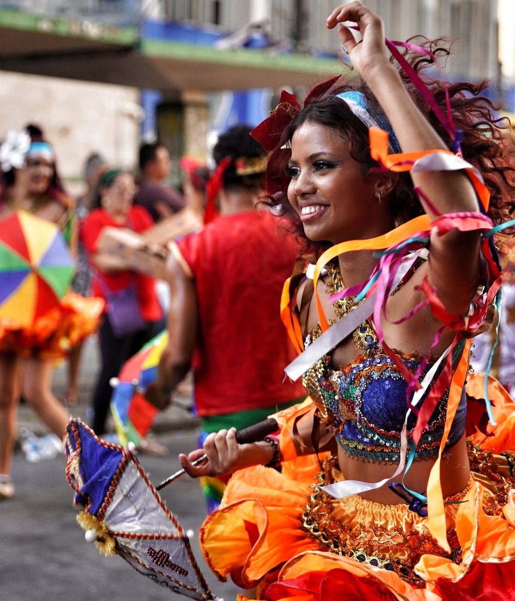

Ofício das Baianas de Acarajé completa duas décadas como Patrimônio Cultural do Brasil
Fonte: Agência Brasil / IPHAN · Salvador (BA)
Clique ou passe o cursor sobre qualquer unidade federativa para carregar os dados geográficos, matrizes culturais e gastronomia do estado selecionado.
Maior litoral do Brasil, combinando costa tropical com o Sertão da Caatinga e a Chapada Diamantina.
Samba de Roda do Recôncavo, Afoxé Filhos de Gandhy, Lavagem do Bonfim, Irmandade da Boa Morte.
Acarajé, Vatapá, Caruru, Moqueca Baiana com azeite de dendê e leite de coco.

Patrimônio Imaterial da Humanidade pela UNESCO desde 2012. Surgido no Recife no final do século XIX entre bandas militares e blocos carnavalescos, combina passos acrobáticos derivados da capoeira, ritmo frenético de metais e a sombrinha colorida como objeto cenográfico. Os passistas parecem flutuar sem nunca tocar o chão.
Cortejo régio originado nos séculos XVII e XVIII, quando reis e rainhas coroados pela Igreja Católica desfilavam com suas cortes de escravizados. Os tambores alfaia produzem o baque virado — uma síncope complexa e poderosa. A dama do paço carrega a calunga, boneca sagrada guardiã dos ancestrais.
Uma das mais complexas manifestações do folclore brasileiro. A ópera popular do Nordeste narra a morte e ressurreição de um boi sagrado. No Maranhão existem quatro sotaques distintos — da ilha, de matraca, de orquestra e de zabumba — cada um com figurino, ritmo e dança específicos.
O maior ciclo festivo popular do interior do Brasil acontece durante todo o mês de junho. Trios de zabumba, triângulo e sanfona preservam o forró pé-de-serra autêntico, acompanhado por quadrilhas juninas e a celebração das colheitas de milho do sertão.
A confluência das técnicas indígenas de mandioca, a cozinha dos engenhos de açúcar e a mestria afro-brasileira dos azeites e pimentas.

Bolinho de feijão-fradinho moído em pedra e frito no azeite de dendê fervente. Recheado com vatapá, caruru e camarão seco defumado.

Arroz da terra e feijão-de-corda cozidos em caldo aromático com carne de sol e cubos de queijo de coalho tostados na chapa de ferro.

Camadas milimétricas de massa amanteigada enroladas com goiabada derretida. Tradição secular com técnica manual de precisão.

Doce clássico feito com castanha de caju moída, amendoim e rapadura, refletindo a abundância do cajueiro nas terras secas do Nordeste.
“A Caatinga é o único bioma exclusivamente brasileiro. O que parece seco na estiagem explode em verde e vida com as primeiras chuvas do sertão.”
O Rio São Francisco corta o Nordeste como espinha dorsal da integração sertaneja, permitindo a agricultura irrigada de frutas no Vale do São Francisco e garantindo a subsistência de centenas de comunidades ribeirinhas e quilombolas.
Das falésias coloridas do litoral cearense aos canyons do Xingó em Sergipe e Alagoas, a geografia nordestina combina ecossistemas costeiros tropicais com a imponência rochosa do semiárido.